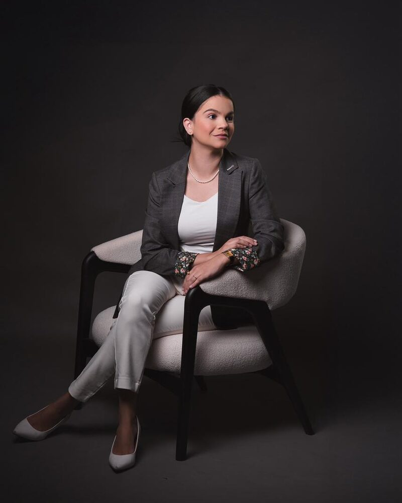

Sobre a Priscilla
Priscilla Braga
Fisioterapeuta, com 9 anos de ensino na área da estética, em Natal-RN.
Trajetória
[formação e especializações: a confirmar]
[tempo de atuação na clínica: a confirmar]
Como ela ensina
Uma aluna descreve a metodologia de ensino da Priscilla como “bem objetiva e clara, facilitando o entendimento”.
[descrição do método de ensino, nas palavras da Priscilla: a confirmar]
Números
[alunas formadas, turmas ou cidades atendidas, se a Priscilla quiser mostrar: a confirmar]

Relatos de alunas
“Eu estou imensamente satisfeita pela minha escolha com a Mentoria com Priscilla. Foi um dia de muito aprendizado voltado em evidência e muita prática. Hoje, posso dizer que estou segura e confiante para colocar em prática todo o aprendizado. Eu indico e recomendo a mentoria.”
“Priscilla sempre foi uma referência para mim desde o curso da pós-graduação. Eu sempre quis fazer cursos com ela pela metodologia de ensino dela ser bem objetiva e clara, facilitando o entendimento. Embora eu tenha realizado uma Pós em Estética avançada, ainda saí com muitas dúvidas e inseguranças. Fazer o MBE me ajudou a me preparar para o novo e me sentir mais confiante para as novas expectativas de 2026. Então, agradeço a ela por poder compartilhar o conhecimento comigo. Além disso, ela oferece suporte durante a pós, permitindo que, de qualquer forma, ainda possamos esclarecer dúvidas durante os atendimentos, o que gera mais confiança.”
Ficou com dúvida?
Converse com a Priscilla pelo WhatsApp e tire suas dúvidas.
Tire suas dúvidas pelo WhatsAppVer as mentorias